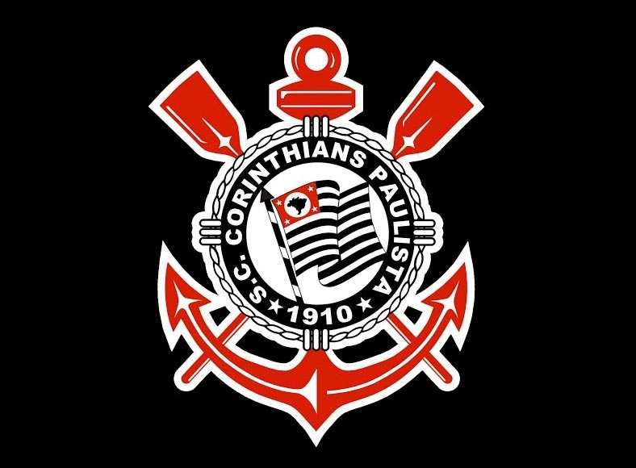

|  | |
| HOME | BIOGRAFIA | CAMPANHAS PUBLICITÁRIAS | CONTATO | |
O NASCIMENTO DO TODO PODEROSOSport Club Corinthians Paulista é um clube poliesportivo brasileiro da cidade cidade de São Paulo, capital do estado homônimo. Foi fundado como uma equipe de futebol no dia 1 de setembro de 1910 por um grupo de operários do bairro Bom Retiro. Seu nome foi inspirado no Corinthian FC de Londres, que excursionava pelo Brasil. |
|
|
Todos os direitos reservados |
|